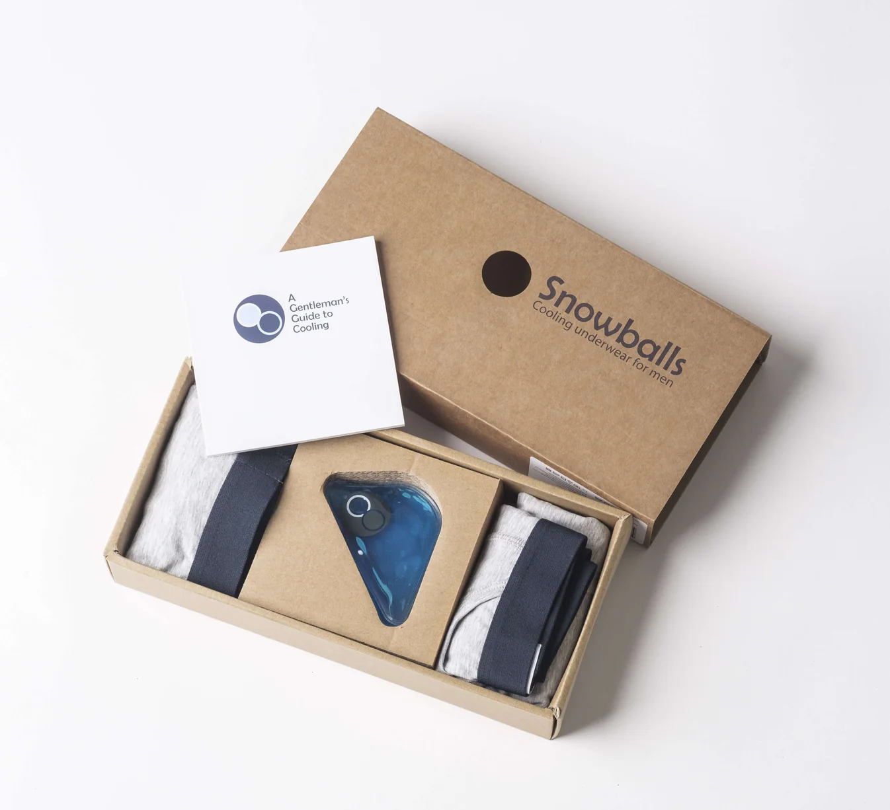
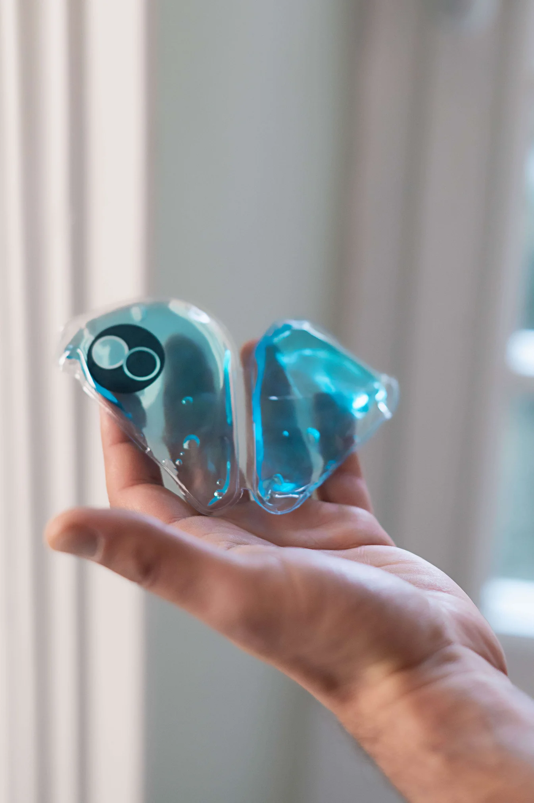
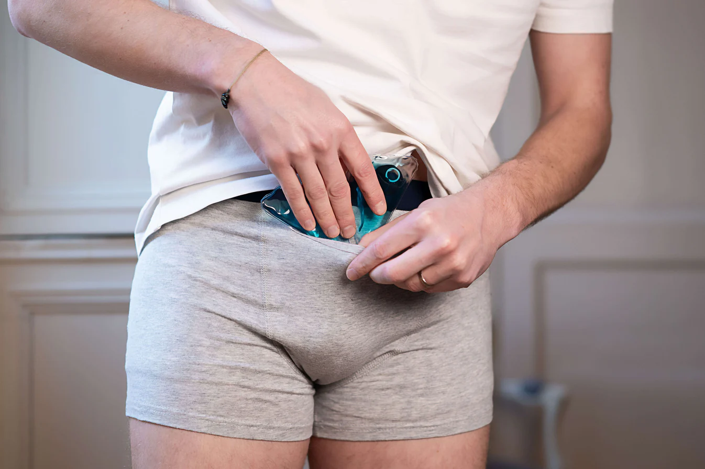
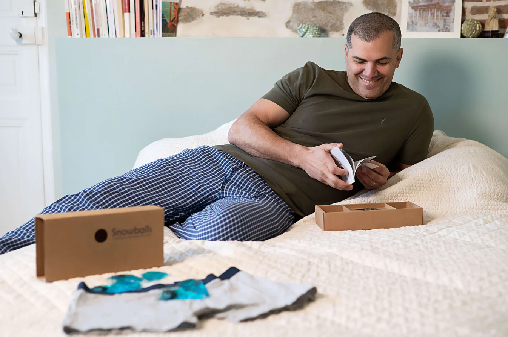

Beej is a routine, not a gadget. Once your kit arrives, it lives quietly in your fridge, ready when you want it. Most men settle into a rhythm in the first week and stop thinking about it after that.

Your kit arrives in a single, recyclable box. Inside: two boxer-briefs in your size, three cooling wedges, a hygiene pouch, and a small printed booklet.

Place the three wedges into the silicone hygiene pouch. Slip the pouch into your fridge or freezer. About an hour later, they're ready.

Take a wedge from the pouch. Slide it into the discreet front pocket of your Beej boxer-brief. The wedge sits flat and stays in place.

Wear normally for around thirty minutes. At your desk, after a workout, on the commute. Two sessions a day is a comfortable rhythm.
There is no rigid schedule. The men who get the most out of Beej find one or two natural moments in the day and stick with them. Here's a common pattern.
Take a wedge from the fridge while the kettle boils. Slip into your Beej. Wear it through your first thirty minutes of email or your morning commute.
Heat builds up after sitting through the meeting block before lunch. The afternoon wedge is the one most customers say they look forward to.
After a workout, after the gym, after a long day on the bike. Thirty minutes on the sofa with a wedge is the simplest version of recovery.
If you're new to cooling, these are the questions that come up most often. There's a fuller list on the FAQ page.
No. The wedge is engineered to hold at around 16°C, not freezing. The first few seconds feel like stepping into an air-conditioned room. After that the sensation is pleasant and even, for the full thirty minutes.
Yes — most men do. The pocket is hidden under a flap of fabric and there's no visible bulge through trousers. You can sit through a meeting wearing one and nobody will notice.
One or two thirty-minute sessions a day is what most men settle into. There is no benefit to wearing it longer; the wedge stops cooling once it's reached room temperature anyway.
Yes — though most men prefer to use it before or after training rather than during heavy exercise. For walks, light cardio, and yoga it's perfectly comfortable.
Each wedge holds its target temperature for around thirty minutes per session, and is good for hundreds of freeze-thaw cycles — typically 12 to 18 months of regular use. Replacement wedges are available as a refill pack.
A small ritual. Twice a day. The kind of thing you don't notice until you stop, and then you do.— From the Beej booklet